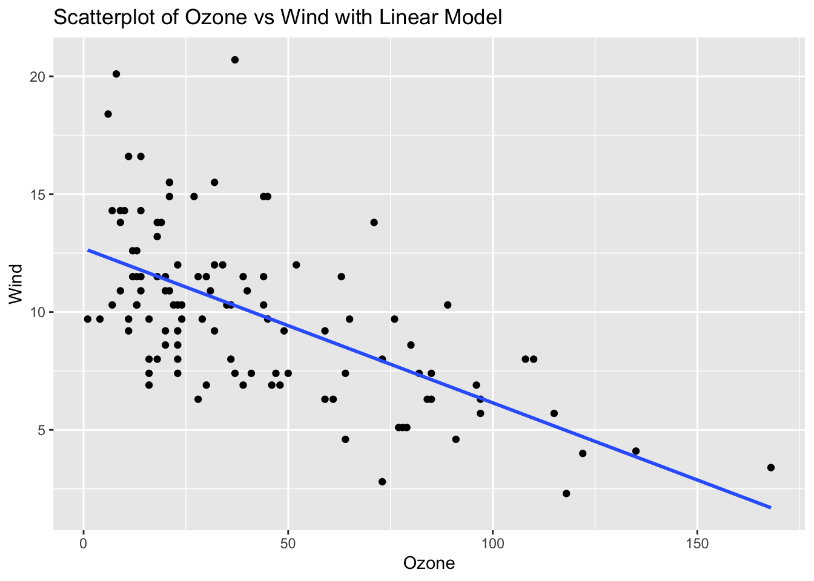
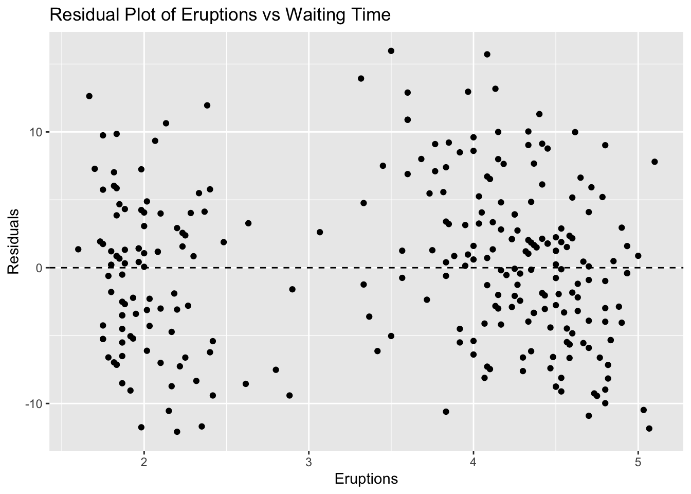
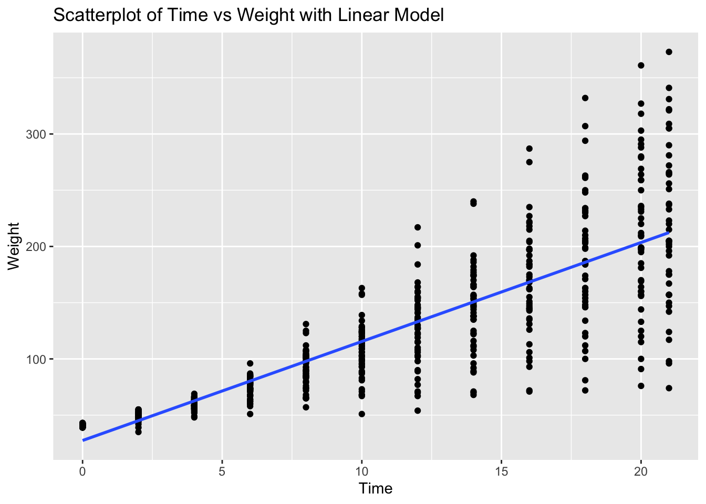
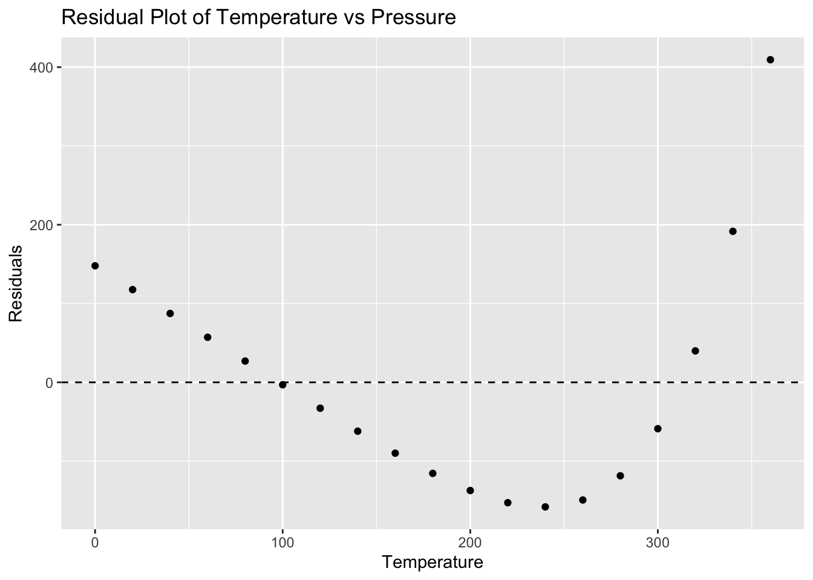
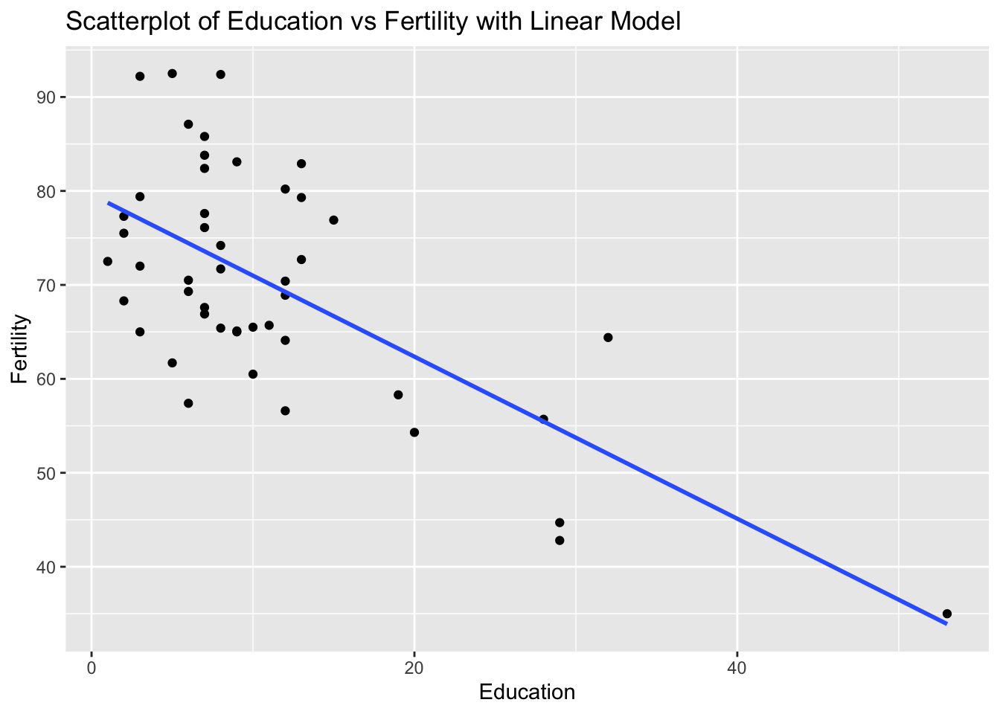

| X | Y | Predicted_Y |
|---|---|---|
| 1 | 2 | 3.5 |
| 2 | 8 | 4.0 |
| 4 | 3 | 5.0 |
| 6 | 7 | 6.0 |
| 8 | 8 | 7.0 |
Residuals, Outliers and Predictions
If you recall from the last section, we have been working with a data set from a local airport. This data set included several variables and we were looking into the possibility of a relationship / association between the variables Temperature (Explanatory) and Dew Point (Response). During our initial analysis we create a scatterplot and based on the graph, there appeared to be a strong, positive, linear association between the variables. Because of this we went on to calculate the correlation between the two variables (R = 0.9512) and used this to help find the equation for a linear model to represent the data set.
Finding Residuals
We found that the slope of the model (or regression line) was \(b_1 \,= \,1.107\) and the intercept was found to be \(b_0\, = \,-18.03\). This gave us a regression line of
When constructed in this manner, this model is known as the line of best fit. It was mentioned earlier that what is meant by best fit is where the vertical distances between the points and the model is as small as possible. We will jump into a deeper example in a bit, but the first application of this regression line is to make predictions. What this means is that every point that is on the regression line is the predicted response value based on the explanatory value given. Consider this small example :
Here is a table that has the actual points from the data set and the predicted values taken from the linear model:
This image shows is two different type of points, one that is above the regression line and one that is below. Consider the point that is 4 units above the line. It appears the actual point is located at \((2, 8)\) while the point on the line is at \((2, 4)\). We can interpret this example from the regression line as:
When the explanatory value of \(x = 2\) is used in the model, the predicted response value is \(\hat{y} = 4.0\).
As you can see from the graph, the predicted value does not match up with the actual value (green arrow). We have some distance between the actual and predicted \(y\) values. The distance between the actual point and the line is called a residual. You can see the point above the line has a residual of \(4\) and the point below the line has a residual of \(-2\) (red arrow).
Calculating the residual is easy enough :
As you can see above, the point \((\,2\, , \,8\,)\) has a predicted value of \(4\) when \(x=2\), which leads to a residual of \(8-4 =4\).
The point \((\,4\, , \, 3 \,)\) has a predicted value of 5 when \(x=4\), which returns a residual of \(3 - 5 = -2\).
This shows us that when a residual turns out positive, then the actual point is above the regression line and when the actual point is below the line the residual will wind up being negative. This brings us back to the idea of “line of best fit”.
If we had wanted, we could have put any line on this graph to use as our linear model. But how could we determine when one model was better than another? What we can do is use the residuals to help us decide. It is tempting to say that the model where the sum of the residuals is the smallest would be the best fit. While this is a good idea, there are some problems that might arise because we are adding positive and negative values together.
Our solution will then be to take all of the residuals and square them. When we do this, we will turn the negative residuals into positive values when they are squared and the positive residuals will still return positive values when they are squared. We can now add these squared residuals together and use the model that has the smallest total.
The model that we created earlier has been shown as the model that returns the smallest value. This is why the linear model (or regression line) is also sometimes called the least squares regression line.
Finding Outliers
When we determing how to find some measures of center and spread, there were certain situations when one measure was better than another. For example, when we were calculating the average of a data set, we had to be cautious if the data set had outliers. As we saw, even a few outliers could severly affect the reliability of the mean. Since the standard deviation is calculated using the mean, it is also affected by outliers. So what does that say about the correlation between two variables, the slope of the regression line ot the intercept of the regression line? After all, they also use averages and standard deviations when we calculated these values?
This tells us that outliers can affect all three of them, so they can also affect our model. That leads us to the question of how we can determine if a data set has outliers. We saw how we can use the IQR method if we are looking at a single variable, but how does having two variables change identifying outliers? It all comes back to the scatterplot.
An outlier is a point that does not follow the pattern of the data. It will be a point that stands out away from the others. For example, look at the following scatterplot:

In this graph we can definitely see one point that does not follow the pattern at all. This is a point that we would investigate as a possible outlier. Do not rule it out of hand because there are several reasons why this point appears to be an outlier.
Measurement Error: This can occur when collecting the data and the measurement tool that is being used is faulty or inaccurate.
Data Entry Error: Errors caused by humans, due to invalid data collection, data entry, or measurement can lead to outliers in the data.
Experimental Error: If the data collection involves experimentation, oftentimes there can be errors while planning and executing the experiment.
Data Processing Error: After the data is collected, the data is often processed. This process includes data modeling and manipulation; which can l ead to the creation of outliers if not performed correctly.
True Outlier: Outliers that are not created due to human error are natural Outliers. These data points are true and can have many reasons behind their existence.
One of the ways to test if this is an outlier is to examine the scatterplot with and without the possible outliers. If removing the point causes a drastic change in the regression line, then this is good evidence that that point is an outlier and needs to be investigated further.
Here is a side by side picture of the scatterplot with and without the suspected outlier:
As you can see, we do have a dramatic shift in the regression line. The data set that contains the outlier has a regression line that has a negative association and when the suspected outlier is removed, then we can see that the new model has changed direction and now has a positive association. If the removed point were not an outlier, then the regression line would have changed slightly.
Influential Observations
There is one other type of point to be cautious of because it may look like an outlier, but it is really what is called an influential observation. These are points that are far from most of the data, yet it still follows the pattern of the regession line. In the example above, the suspected outlier was far from the data and did not follow the pattern of the model. Here is an example:

As you can see from this graph, we have a point that looks like it could be an outlier. However, it still follows the model for the regression line fairly closely. Because of this, we will not call this point an outlier, but we will label it as an influential observation.
Making Predictions
Let’s now take the ideas and turn our attention back to the weather example we have been using.
We have been examining if there is any kind of association between Temperature and Dew Point. Based upon earlier work, we found the data to be appropriate for a linear model. We then developed the model as :
Using this model, we could now start to make predictions for the Dew Point based on values from the Temperature. For instance, I could ask what the predicted (expected) Dew Point will be if the Temperature is 60 degrees. All we need to do is to go to our model and and let the explanatory variable, x, be 60:
This tells us that when the Temperature is 60 degrees, the expected Dew Point is at 48.39 degrees. Also, this says that the point \((60, 48.39)\) is a point on the regression line.
For another example, let’s consider the first day of the year. On this day the temperature was listed at 43.3 degrees, what would be the predicted value for the Dew Point?
Finding predictions one at a time like this would be fine, but what if we wanted to make several predictions at once? We could use the predict( ) function in R to help us with this. The syntax for this function is:
predict(regression_line, newdata = data.frame(Explanatory_Values))
This says that we need to calculate the regression line, save it to a variable, and then run the predict( ) command using the name of this regression line. We will also need to create a data frame with the explanatory values that we want to use for our predictions.
Let’s go back to the example where we wanted to make a prediction for the Dew Point when the Temperature was 60 degrees. We will use the predict( ) function to make this prediction.
# Recall the lm( ) command needs the Explanatory first followed by Response
reg_line <- lm(SVA$DEWP ~ SVA$TEMP)
# We have now saved the regression line to the variable "reg_line"
# We will now send all of the temperatures in SVA$TEMP to the "predict( )"
# command and save the results to the variable "predictions". If we didn't
# save the results, then all of the predictions would be printed to the console.
predictions <- predict(reg_line, newdata = data.frame(SVA$TEMP))
# We can now just look at the first few predictions.
head(predictions, 8) 1 2 3 4 5 6 7 8
29.89879 24.58315 17.38490 20.26420 21.81460 26.90874 26.90874 22.81128 If we wanted to use predict( ) to make a prediction for the Dew Point when the Temperature was 43.3 degrees, we could use the following code:
# Recall the predict command needs a data frame for the values we want to
# predict. We will use the value 43.3 for the temperature.
reg_line<- lm(DEWP ~ TEMP, data = SVA)
# We need to create a data frame for this point. Let's call the new data
# frame "predicted-values"
predicted_values = data.frame(TEMP = 43.3)
predict(reg_line, newdata = predicted_values) 1
29.89879 This tells me that when the temperature was 43.3 degrees, the predicted Dew Point was 29.9 degrees.
If we wanted to predict 5 values, say Temp = 30, 35, 40, 45, 50, we could use the following code:
# Recall the predict command needs a data frame for the values we want to
# predict. We will use the values 30, 35, 40, 45, and 50 for the temperature.
# We need to create a data frame for these points. Let's call the new data
predicted_values = data.frame(TEMP = c(30, 35, 40, 45, 50))
predict(reg_line, newdata = predicted_values) 1 2 3 4 5
15.17006 20.70717 26.24429 31.78141 37.31852 The output is in the same order as the data frame we created.
This says that
- when the temperature was 30 degrees, the predicted Dew Point was 13.3 degrees.
- when the temperature was 35 degrees, the predicted Dew Point was 18.4 degrees.
- when the temperature was 40 degrees, the predicted Dew Point was 23.5 degrees.
- when the temperature was 45 degrees, the predicted Dew Point was 28.6 degrees.
- when the temperature was 50 degrees, the predicted Dew Point was 33.7 degrees.
Calculating Residuals and Residual Plots
How close is the predicted value from the actual value? Here is the actual data from that day:

We could then calculate the residual to get :
Because the residual is negative, we know our point falls below the regression line telling us that the predicted value is larger than the acutal value. So the regression line is above the actual data point.
Luckily, R has a built-in function that will calculate all of these residuals for us. The syntax is:
resid(regression_line)
This says that we need to calculate the regression line, save it to a variable, and then run the resid( ) command using the name of this regression line. Here is how we could calculate all of the residuals for our current Weather data set.
# Recall the lm( ) command needs the Explanatory first followed by Response
reg_line <- lm(SVA$DEWP ~ SVA$TEMP)
# We have now saved the regression line to the variable "reg_line"
# We will now send this to the "resid( )" command. Note that there are
# 365 days in this data set. In order to not print out the entire set
# of residuals, I will print off the first 12 so you can see the result
head(resid(reg_line), 12) 1 2 3 4 5 6
-4.098786162 4.816845190 1.815095980 -2.864204336 -3.914596813 -0.008743526
7 8 9 10 11 12
-0.808743526 0.988722308 5.252391271 -3.399571118 1.640079040 7.074055210 Residuals are another tool we can use to help us determine if the linear model is a good fit.
A residual plot is a graph that shows the residuals on the vertical axis and the independent variable on the horizontal axis. If the points in a residual plot are randomly dispersed around the horizontal axis, a linear regression model is appropriate for the data; otherwise, a nonlinear model is more appropriate.
# Load required library for ggplot
library(ggplot2)
# Fit a linear model predicting TEMP using DEW
model <- lm(TEMP ~ DEWP, data = SVA)
# In order to use ggplot, we need to create a data frame
# Create a data frame with explanatory values and residuals
residual_data <- data.frame(
Explanatory_Values = SVA$TEMP,
Residuals = resid(model)
)
# Create a residual plot using ggplot2
# Notice the third layer is just a dashed horizontal line through 0. This makes
# it easier to see which points are above and below the regression line.
# The fourth layer is an arrow to show you the first residual we found.
# The Explanatory value was 43.3 and the residual was -4.1
ggplot(residual_data, aes(x = Explanatory_Values, y = Residuals)) +
geom_point(color = "blue") +
geom_hline(yintercept = 0, linetype = "dashed", color = "red") +
geom_segment(aes(x = 50, y = -12, xend = 43.3, yend = -4.1),
arrow = arrow(length = unit(0.25, "cm"), type = "closed"),
color = "red",
size = 0.25,
linetype = "solid"
) +
theme_minimal() +
labs(title = "Residual Plot",
x = "Explanatory Values",
y = "Residuals")Remember that if there is no clear pattern to this picture, then that is more evidence that the linear model is a good fit. In this case the points are fairly random around the line \(y = 0\) which leads to confidence the linear pattern is a good choice.
Here is an example of a residual plot with a non-linear pattern. Once we see this, we should recognize that the linear model is not a good fit.
There is one final warning for you when it comes to making predictions using a model. When you are making predictions, you want to make sure that you are using explanatory values that are relevant to the data set. For instance, in our SVA data set, look at the largest and smallest temperatures:
# Find the maximum value
max(SVA$TEMP)[1] 79.1# Find the minimum value
min(SVA$TEMP)[1] 16.9Based on this quick check, we only want to make predictions based on the values for which the model is built. In other words, for this example we only want to use values that fall between 16.9 and 79.1. It is not bad to expand your values a little bit, but the further you get away from these values, the less reliable your prediction will become.
Extrapolation
For example, could we make a prediction on the dew point if the temperature were 300 degrees? Absolutely. All we are doing is evaluating our model when the temperature is 300:
As an exercise, this is certainly as answer. Unfortunately, it is not very reliable or even useful. When someone is trying to make predictions outside of the bounds of the model, this is called extrapolation. When someone does this, feel free to discount the results presented. Could they be correct? Maybe, but highly unlikely.
Important
Extrapolation produces predictions that are unreliable. Avoid this practice at all times.
Putting It All Together
Let’s walk through an example where we will go through these steps one at a time and then put them all together.
- Create a Scatterplot with Linear Model:
- Use
ggplot2to create a scatterplot of the two variables. - Add a linear model to the scatterplot using
geom_smoothwith thelmmethod.
- Use
- Determine Possible Outliers or Influential Observations:
- Identify any potential outliers or influential points from the scatterplot.
- Calculate Residuals:
- Fit a linear model using
lm(). - Extract the residuals from the model.
- Fit a linear model using
- Make a Residual Plot:
- Create a residual plot using
ggplot2.
- Create a residual plot using
- Make Predictions Using the Linear Model:
- Use the
predict()function to make three predictions. - Ensure that one of the values used for prediction is an example of extrapolation (a value outside the range of the original data).
- Use the
Task: Determine if there is a linear relationship between speed and dist in the cars dataset.
We will first load up the data set and take a look at the first few rows:
# Load ggplot2 and cars dataset
library(ggplot2)
data(cars)
head(cars) speed dist
1 4 2
2 4 10
3 7 4
4 7 22
5 8 16
6 9 10min(cars$speed)[1] 4max(cars$speed)[1] 25min(cars$dist)[1] 2max(cars$dist)[1] 120From the output of head(cars), we can see that the cars dataset contains two variables: speed and dist.
Let’s make sure we have an outlier in the data set. We will add one using the rbind( ) function to add a row to the data frame. We will want to add a point that is far from the rest of the data. The speed has values that range between 4 - 25 and the stopping distance has values that range between 2 - 120.
Let’s add a point with a speed of 10 and a stopping distance of 200.
rbind( )is a function that is used to combine two data frames by row.data.frame( )is a function that creates a data frame, so data.frame(speed = 10, dist = 200) creates a data frame with one row and two columns (speed and dist).- We will combine these and save the result in a new data frame called
cars_with_outlier.
# Add an outlier to the dataset
cars_with_outlier <- rbind(cars, data.frame(speed = 10, dist = 200))Now, we can proceed with the analysis:
# Scatterplot with linear model
ggplot(cars_with_outlier, aes(x = speed, y = dist)) +
geom_point() +
geom_smooth(method = "lm", se = FALSE) +
labs(title = "Scatterplot of Speed vs Stopping Distance with Linear Model", x = "Speed", y = "Stopping Distance")`geom_smooth()` using formula = 'y ~ x'From the scatterplot, there is a point that is a clear candidate to be an outlier.
At this point we would need to question if we should continue with the analysis or remove the outlier. For the sake of this assignment, we will continue with the analysis.’
We can create the linear model and store it in a variable called model_cars. This will allow us to easily see the slope and intercept for the linear model.
# Fit linear model
model_cars <- lm(dist ~ speed, data = cars_with_outlier)
model_cars
Call:
lm(formula = dist ~ speed, data = cars_with_outlier)
Coefficients:
(Intercept) speed
-3.764 3.258 Now that we have the model, we are ready to calculate the residuals and make a residual plot.
We will calculate the residuals and store them in a variable called residuals_cars.
# Calculate residuals
residuals_cars <- resid(model_cars)
residuals_cars 1 2 3 4 5 6
-7.2664872 0.7335128 -15.0394515 2.9605485 -6.2971063 -15.5547611
7 8 9 10 11 12
-10.8124159 -2.8124159 5.1875841 -15.0700707 -4.0700707 -21.3277254
13 14 15 16 17 18
-15.3277254 -11.3277254 -7.3277254 -12.5853802 -4.5853802 -4.5853802
19 20 21 22 23 24
7.4146198 -15.8430350 -5.8430350 18.1569650 38.1569650 -25.1006898
25 26 27 28 29 30
-19.1006898 8.8993102 -16.3583445 -8.3583445 -19.6159993 -11.6159993
31 32 33 34 35 36
-1.6159993 -12.8736541 1.1263459 21.1263459 29.1263459 -22.1313089
37 38 39 40 41 42
-12.1313089 9.8686911 -29.3889637 -13.3889637 -9.3889637 -5.3889637
43 44 45 46 47 48
2.6110363 -1.9042732 -17.1619280 -4.4195828 17.5804172 18.5804172
49 50 51
45.5804172 7.3227624 171.1875841 We can now create the residual plot using ggplot( ) where we will keep the same independent variable speed and use the residuals_cars as the dependent variable. We will add a horizontal dashed line at 0 to help us see which points are above and below the regression line.
# Residual plot
ggplot(cars_with_outlier, aes(x = speed, y = residuals_cars)) +
geom_point() +
geom_hline(yintercept = 0, linetype = "dashed", color="red") +
labs(title = "Residual Plot of Speed vs Stopping Distance", x = "Speed", y = "Residuals")Notice that we have a little more evidence that the point we added is an outlier!
Finally, we can use the linear model to make predictions. We will use the predict() function to make three predictions: one for a speed of 10, one for a speed of 15, and one for a speed of 50 (which is an example of extrapolation).
If you recall, we need to use a data frame to make the predictions. We will create a data frame with the speed values we want to predict.
# Make predictions
predictions <- predict(model_cars, newdata = data.frame(speed = c(10, 15, 50))) # 50 is extrapolated
predictions 1 2 3
28.81242 45.10069 159.11861 We could interpret the output as follows :
- For a speed of 10, the predicted stopping distance is approximately 4.5.
- For a speed of 15, the predicted stopping distance is approximately 6.5.
- For a speed of 50 (extrapolation), the predicted stopping distance is approximately 120.5.
This concludes the analysis of the linear relationship between speed and dist in the cars dataset.
Exercises
In this assignment, you will be told which data set and two different quantitative variables to analyse. The data sets are already built into R so you don’t have to download any of the data. You will create scatterplots with linear models using ggplot2, determine any possible outliers or influential observations, calculate the residuals, make a residual plot, and use the linear model to make three predictions, where one of the values is an example of extrapolation.
Steps
- Create a Scatterplot with Linear Model:
- Use
ggplot2to create a scatterplot of the two variables. - Add a linear model to the scatterplot using
geom_smoothwith thelmmethod.
- Use
- Determine Possible Outliers or Influential Observations:
- Identify any potential outliers or influential points from the scatterplot.
- Calculate Residuals:
- Fit a linear model using
lm(). - Extract the residuals from the model.
- Fit a linear model using
- Make a Residual Plot:
- Create a residual plot using
ggplot2.
- Create a residual plot using
- Make Predictions Using the Linear Model:
- Use the
predict()function to make three predictions. - Ensure that one of the values used for prediction is an example of extrapolation (a value outside the range of the original data).
- Use the
Problem 1: Iris Dataset - Sepal Length vs Petal Length
# Load ggplot2 and iris dataset
library(ggplot2)
data(iris)
# Scatterplot with linear model
ggplot(iris, aes(x = Sepal.Length, y = Petal.Length)) +
geom_point() +
geom_smooth(method = "lm", se = FALSE) +
labs(title = "Scatterplot of Sepal Length vs Petal Length with Linear Model", x = "Sepal Length", y = "Petal Length")`geom_smooth()` using formula = 'y ~ x'
# Fit linear model
model_iris <- lm(Petal.Length ~ Sepal.Length, data = iris)
# Calculate residuals
residuals_iris <- resid(model_iris)
# Residual plot
ggplot(iris, aes(x = Sepal.Length, y = residuals_iris)) +
geom_point() +
geom_hline(yintercept = 0, linetype = "dashed") +
labs(title = "Residual Plot of Sepal Length vs Petal Length", x = "Sepal Length", y = "Residuals")# Make predictions
predictions <- predict(model_iris, newdata = data.frame(Sepal.Length = c(5, 6, 10))) # 10 is extrapolated
predictions 1 2 3
2.190722 4.049154 11.482886 Problem 2: Airquality Dataset - Ozone vs Wind
# Load ggplot2 and airquality dataset
library(ggplot2)
data(airquality)
# Remove NA values
airquality_clean <- na.omit(airquality)
# Scatterplot with linear model
ggplot(airquality_clean, aes(x = Ozone, y = Wind)) +
geom_point() +
geom_smooth(method = "lm", se = FALSE) +
labs(title = "Scatterplot of Ozone vs Wind with Linear Model", x = "Ozone", y = "Wind")`geom_smooth()` using formula = 'y ~ x'
# Fit linear model
model_airquality <- lm(Wind ~ Ozone, data = airquality_clean)
# Calculate residuals
residuals_airquality <- resid(model_airquality)
# Residual plot
ggplot(airquality_clean, aes(x = Ozone, y = residuals_airquality)) +
geom_point() +
geom_hline(yintercept = 0, linetype = "dashed") +
labs(title = "Residual Plot of Ozone vs Wind", x = "Ozone", y = "Residuals")# Make predictions
predictions <- predict(model_airquality, newdata = data.frame(Ozone = c(50, 100, 200))) # 200 is extrapolated
predictions 1 2 3
9.4222467 6.1479811 -0.4005501 Problem 3: ToothGrowth Dataset - Dose vs Length
# Load ggplot2 and ToothGrowth dataset
library(ggplot2)
data(ToothGrowth)
# Scatterplot with linear model
ggplot(ToothGrowth, aes(x = dose, y = len)) +
geom_point() +
geom_smooth(method = "lm", se = FALSE) +
labs(title = "Scatterplot of Dose vs Length with Linear Model", x = "Dose", y = "Length")`geom_smooth()` using formula = 'y ~ x'# Fit linear model
model_toothgrowth <- lm(len ~ dose, data = ToothGrowth)
# Calculate residuals
residuals_toothgrowth <- resid(model_toothgrowth)
# Residual plot
ggplot(ToothGrowth, aes(x = dose, y = residuals_toothgrowth)) +
geom_point() +
geom_hline(yintercept = 0, linetype = "dashed") +
labs(title = "Residual Plot of Dose vs Length", x = "Dose", y = "Residuals")# Make predictions
predictions <- predict(model_toothgrowth, newdata = data.frame(dose = c(0.5, 1, 3))) # 3 is extrapolated
predictions 1 2 3
12.30429 17.18607 36.71321 Problem 4: Cars Dataset - Speed vs Stopping Distance
# Load ggplot2 and cars dataset
library(ggplot2)
data(cars)
# Scatterplot with linear model
ggplot(cars, aes(x = speed, y = dist)) +
geom_point() +
geom_smooth(method = "lm", se = FALSE) +
labs(title = "Scatterplot of Speed vs Stopping Distance with Linear Model", x = "Speed", y = "Stopping Distance")`geom_smooth()` using formula = 'y ~ x'
# Fit linear model
model_cars <- lm(dist ~ speed, data = cars)
# Calculate residuals
residuals_cars <- resid(model_cars)
# Residual plot
ggplot(cars, aes(x = speed, y = residuals_cars)) +
geom_point() +
geom_hline(yintercept = 0, linetype = "dashed") +
labs(title = "Residual Plot of Speed vs Stopping Distance", x = "Speed", y = "Residuals")# Make predictions
predictions <- predict(model_cars, newdata = data.frame(speed = c(10, 15, 30))) # 30 is extrapolated
predictions 1 2 3
21.74499 41.40704 100.39317 Problem 5: Faithful Dataset - Eruptions vs Waiting Time
# Load ggplot2 and faithful dataset
library(ggplot2)
data(faithful)
# Scatterplot with linear model
ggplot(faithful, aes(x = eruptions, y = waiting)) +
geom_point() +
geom_smooth(method = "lm", se = FALSE) +
labs(title = "Scatterplot of Eruptions vs Waiting Time with Linear Model", x = "Eruptions", y = "Waiting Time")`geom_smooth()` using formula = 'y ~ x'
# Fit linear model
model_faithful <- lm(waiting ~ eruptions, data = faithful)
# Calculate residuals
residuals_faithful <- resid(model_faithful)
# Residual plot
ggplot(faithful, aes(x = eruptions, y = residuals_faithful)) +
geom_point() +
geom_hline(yintercept = 0, linetype = "dashed") +
labs(title = "Residual Plot of Eruptions vs Waiting Time", x = "Eruptions", y = "Residuals")
# Make predictions
predictions <- predict(model_faithful, newdata = data.frame(eruptions = c(2, 3, 5))) # 5 is extrapolated
predictions 1 2 3
54.93368 65.66332 87.12260 Problem 6: ChickWeight Dataset - Time vs Weight
# Load ggplot2 and ChickWeight dataset
library(ggplot2)
data(ChickWeight)
# Scatterplot with linear model
ggplot(ChickWeight, aes(x = Time, y = weight)) +
geom_point() +
geom_smooth(method = "lm", se = FALSE) +
labs(title = "Scatterplot of Time vs Weight with Linear Model", x = "Time", y = "Weight")`geom_smooth()` using formula = 'y ~ x'
# Fit linear model
model_chickweight <- lm(weight ~ Time, data = ChickWeight)
# Calculate residuals
residuals_chickweight <- resid(model_chickweight)
# Residual plot
ggplot(ChickWeight, aes(x = Time, y = residuals_chickweight)) +
geom_point() +
geom_hline(yintercept = 0, linetype = "dashed") +
labs(title = "Residual Plot of Time vs Weight", x = "Time", y = "Residuals")# Make predictions
predictions <- predict(model_chickweight, newdata = data.frame(Time = c(10, 20, 50))) # 50 is extrapolated
predictions 1 2 3
115.4978 203.5282 467.6194 Problem 7: Pressure Dataset - Temperature vs Pressure
# Load ggplot2 and pressure dataset
library(ggplot2)
data(pressure)
# Scatterplot with linear model
ggplot(pressure, aes(x = temperature, y = pressure)) +
geom_point() +
geom_smooth(method = "lm", se = FALSE) +
labs(title = "Scatterplot of Temperature vs Pressure with Linear Model", x = "Temperature", y = "Pressure")`geom_smooth()` using formula = 'y ~ x'
# Fit linear model
model_pressure <- lm(pressure ~ temperature, data = pressure)
# Calculate residuals
residuals_pressure <- resid(model_pressure)
# Residual plot
ggplot(pressure, aes(x = temperature, y = residuals_pressure)) +
geom_point() +
geom_hline(yintercept = 0, linetype = "dashed") +
labs(title = "Residual Plot of Temperature vs Pressure", x = "Temperature", y = "Residuals")
# Make predictions
predictions <- predict(model_pressure, newdata = data.frame(temperature = c(0, 100, 500))) # 500 is extrapolated
predictions 1 2 3
-147.898873 3.343115 608.311066 Problem 8: Trees Dataset - Girth vs Volume
# Load ggplot2 and trees dataset
library(ggplot2)
data(trees)
# Scatterplot with linear model
ggplot(trees, aes(x = Girth, y = Volume)) +
geom_point() +
geom_smooth(method = "lm", se = FALSE) +
labs(title = "Scatterplot of Girth vs Volume with Linear Model", x = "Girth", y = "Volume")`geom_smooth()` using formula = 'y ~ x'# Fit linear model
model_trees <- lm(Volume ~ Girth, data = trees)
# Calculate residuals
residuals_trees <- resid(model_trees)
# Residual plot
ggplot(trees, aes(x = Girth, y = residuals_trees)) +
geom_point() +
geom_hline(yintercept = 0, linetype = "dashed") +
labs(title = "Residual Plot of Girth vs Volume", x = "Girth", y = "Residuals")# Make predictions
predictions <- predict(model_trees, newdata = data.frame(Girth = c(8, 12, 20))) # 20 is extrapolated
predictions 1 2 3
3.583392 23.846818 64.373669 Problem 9: USArrests Dataset - Urban Population vs Assaults
# Load ggplot2 and USArrests dataset
library(ggplot2)
data(USArrests)
# Scatterplot with linear model
ggplot(USArrests, aes(x = UrbanPop, y = Assault)) +
geom_point() +
geom_smooth(method = "lm", se = FALSE) +
labs(title = "Scatterplot of Urban Population vs Assaults with Linear Model", x = "Urban Population", y = "Assaults")`geom_smooth()` using formula = 'y ~ x'
# Fit linear model
model_usarrests <- lm(Assault ~ UrbanPop, data = USArrests)
# Calculate residuals
residuals_usarrests <- resid(model_usarrests)
# Residual plot
ggplot(USArrests, aes(x = UrbanPop, y = residuals_usarrests)) +
geom_point() +
geom_hline(yintercept = 0, linetype = "dashed") +
labs(title = "Residual Plot of Urban Population vs Assaults", x = "Urban Population", y = "Residuals")# Make predictions
predictions <- predict(model_usarrests, newdata = data.frame(UrbanPop = c(50, 80, 100))) # 100 is extrapolated
predictions 1 2 3
147.5986 192.3118 222.1206 Problem 10: Swiss Dataset - Education vs Fertility
# Load ggplot2 and swiss dataset
library(ggplot2)
data(swiss)
# Scatterplot with linear model
ggplot(swiss, aes(x = Education, y = Fertility)) +
geom_point() +
geom_smooth(method = "lm", se = FALSE) +
labs(title = "Scatterplot of Education vs Fertility with Linear Model", x = "Education", y = "Fertility")`geom_smooth()` using formula = 'y ~ x'
# Fit linear model
model_swiss <- lm(Fertility ~ Education, data = swiss)
# Calculate residuals
residuals_swiss <- resid(model_swiss)
# Residual plot
ggplot(swiss, aes(x = Education, y = residuals_swiss)) +
geom_point() +
geom_hline(yintercept = 0, linetype = "dashed") +
labs(title = "Residual Plot of Education vs Fertility", x = "Education", y = "Residuals")# Make predictions
predictions <- predict(model_swiss, newdata = data.frame(Education = c(10, 20, 50))) # 50 is extrapolated
predictions 1 2 3
70.98656 62.36305 36.49254